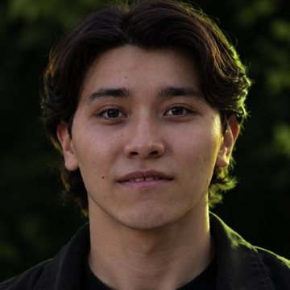

Две линии сошлись
Техническая и визуальная. Пять лет в IT не пропали — они стали инструментом, которого нет у других мобилографов.
Данияр Нурсалимов · Reels Maker · Астана
За три месяца я прошёл путь от выпускника-айтишника, рассылающего резюме в пустоту, до мобилографа с постоянным клиентом и роликом на 4 млн просмотров в портфолио.
Техническая и визуальная. Пять лет в IT не пропали — они стали инструментом, которого нет у других мобилографов.
Один ролик для YOKO. Цифра, которой нет у большинства практикующих сммщиков Астаны.
Не просто снять и уйти. Сам выхожу в кадр — и заведение становится узнаваемым.

Это не биография с перечнем мест работы. Это история о том, как я довёл до конца чужое «надо» — и только после этого нашёл своё.
Омский государственный технический университет, «Прикладная информатика». Диплом защищён на «отлично». Сейчас живу в Астане.
Преподаватель программирования в школе KiberOne, дети 6–14 лет. Учебные материалы и практические задания — своими руками.
Параллельно — дизайнер факультета в ОмГТУ: презентации, макеты сайтов, SMM-контент. Среди работ — презентация для акселератора «РОСТ».
Этот путь не брошен на половине — он доведён до конца. И только поэтому решение уйти чего-то стоит.
Экспертная система мониторинга признаков эмоционального выгорания и рекомендаций для тьюторов. Python, SQL, JSON, 41 продукционное правило. Код на GitHub
Машина вывода на C++, СУБД на PostgreSQL и MongoDB, сети на Cisco и Eltex, 1С, моделирование в Arena и AnyLogic, 10 лабораторных по ОС на C.
Портфолио daniyard4.github.io с нуля на HTML/CSS/JS, концепция «дорога жизни». Telegram-бот на Python и Google Gemini — консультант бизнеса.
Заявка на Digital Nomad Residency одобрена. Пройдены все этапы собеседования, включая интервью с ИИ.
Полтора месяца поиска — и оффер в компанию по кибербезопасности. Тестовое задание за один день: сервис бронирования переговорок на Python и FastAPI с PostgreSQL, Docker, JWT-аутентификацией, веб-интерфейсом и бронированием фразой через LLM. После оффера сам добавил двухфакторную аутентификацию с QR и резервными кодами.
Вышел на работу, за неделю впервые взял в руки Vue — фиксил баги фронта и настраивал адаптивную вёрстку в реальной кодовой базе. Остаться не получилось из-за иностранного статуса, не по моей вине.
После MSSP была попытка вернуться в преподавание — туда, где уже есть опыт. И именно тогда стало понятно главное: ни IT, ни преподавание никогда не были тем, чего хотелось мне самому. И то, и другое было следствием «надо». Желание устроиться ради того, чтобы устроиться.
То, что интересно на самом деле, — маркетинг, реклама и всё, что с этим связано. В октябре 2026 года решение принято окончательно: уйти и из разработки, и из преподавания.
Сразу после этого пошло другое: залетели ролики, появились знакомства с блогерами, пришла работа на проекте.
Ниша — общепит и ритейл: кафе, рестораны, магазины. Я не просто снимаю — я сам выхожу в кадр и становлюсь лицом бренда. Подробнее — ниже.
Скорее всего, дело не в знаках сверху. А в том, что исчезло внутреннее сопротивление — и появились силы делать каждый день то, что раньше давалось через силу.— О том, что изменилось после октября
Три проекта — и одно общее отличие: результат шёл через личное присутствие в кадре.
на одном ролике
Гости узнавали лично и приходили за этим.
До этого был опыт съёмок и модельный опыт — то, что долго считалось хобби, а оказалось главным профессиональным преимуществом.
Ниша — общепит и ритейл: кафе, рестораны, магазины. Не просто снимаю, а сам выхожу в кадр и становлюсь лицом бренда.
ПозиционированиеМобилограф PlayStation-клуба. Тестовая съёмка переросла в постоянную работу. На мне — идеи, контент-план, сценарии, съёмка и монтаж.
Постоянный клиентНе побочный проект, а актив. Там я тестирую форматы, прежде чем применить их на клиенте.
Лаборатория форматовКейсы и цифры в одном месте.
С системой типов — охватный, продающий, подписочный — и метриками.
И копилка идей, чтобы не начинать каждый ролик с нуля.
Прямое применение технического образования в творческой работе. Пять лет в IT не пропали — они стали инструментом.
Появилось после того, как один клуб не заплатил за пробный.
Два часа, потерянные в ожидании на съёмке.
Не два, не пять. Реалистичная цель, которая не выматывает и выигрывает в долгую.
Попытка вести три проекта сразу не даёт прогресса нигде.
Лучшие ролики получались именно так.
Вывод из собственной статистики, а не из чужих советов.
Несколько раз был соблазн добавить в резюме то, чего не было. Ни разу не сделано.
Мобилография, работа со студийным светом и петличками, вертикальный формат, динамичный монтаж, работа со звуком.
Идеи и сценарии, хуки на удержание, контент-план с разделением на охватный, продающий и подписочный.
Модельный опыт, роль лица бренда — то, что даёт заведениям узнаваемость.
Презентации, макеты, визуал для соцсетей — два года на факультете.
Python, SQL, основы FastAPI и Docker, HTML/CSS/JS, LLM через API, автоматизация рутины скриптами.
965 часов у доски учат объяснять сложное просто и держать внимание аудитории.
Проверяю гипотезы по своей статистике: хронометраж, форматы, каналы поиска клиентов — то, что не работает, закрываю.
Диплом на «отлично» по специальности, которая не была призванием.
Сервис на FastAPI с нуля, с Docker и LLM-интеграцией. Первые деньги в IT заработаны.
Цифра, которой нет у большинства практикующих сммщиков Астаны.
Не просто просмотры — люди узнавали и приходили.
Два года ответственности, параллельно с учёбой.
Самое дорогое из всего списка. Пять лет образования и полученный оффер не стали причиной остаться.
Не ушёл в случайную вакансию ради денег.
Говорил «70 тысяч» человек, у которого ролик на четыре миллиона.
Раньше — рассылка резюме и ожидание. Сейчас — проверка гипотез по своим же цифрам.
Если вы кафе, ресторан или магазин и хотите, чтобы вас узнавали в лицо, — давайте обсудим съёмку.